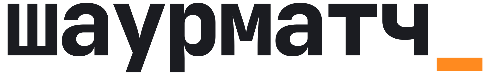
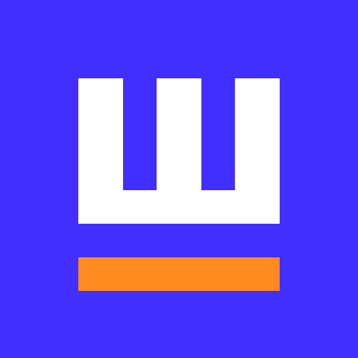
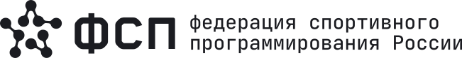
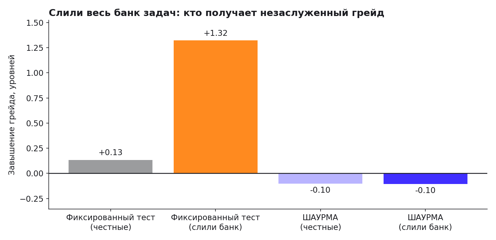
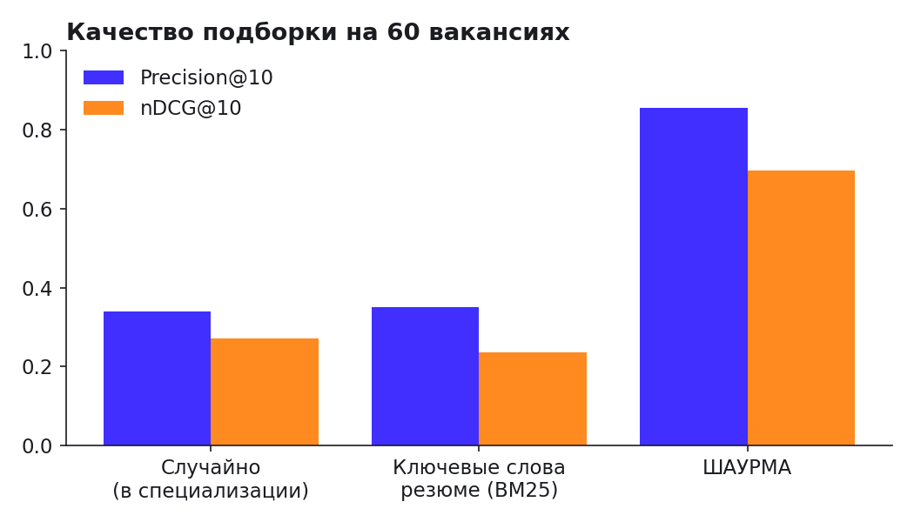

ИТ-найм наоборот: компании находят и приглашают кандидатов, чей грейд подтверждён тестом, а не резюме.
«Шаурматч» — шаурма и матч. Шаурму заворачивают при вас и по вашему заказу; так же наш тест собирает каждому кандидату свой вариант задач, а подбор сводит компанию и человека по подтверждённым навыкам.
Категорию даёт только тест. Зарплата в приглашении — всегда вилка «от–до». Отказ — без понижения грейда.
Цифры вместо эпитетов: код категории, место в выдаче, рейтинг навыка, шанс, что кандидат примет приглашение.
Плоская вёрстка, прямые углы, тонкие линии. Никаких «вау»-эффектов — интерфейс уступает место данным.
Знак подчёркивания «_» в имени — курсор и соус одновременно: продукт всё время дорабатывается и учится («Маринад»). Это единственный тёплый акцент бренда.
Логотип — слово «шаурматч» строчными в JetBrains Mono ExtraBold с трекингом −0.04em и оранжевым курсором «_». Надпись переведена в кривые: используйте файлы, не набирайте логотип шрифтом.


Со всех сторон — не меньше высоты строчной «ш». В файлах logo-on-*.svg поле уже заложено.
Надпись — от 96 px (24 мм) в ширину. Знак — от 16 px. Мельче используйте только знак.
Всегда #FF8A1F, в любой версии. В интерфейсе он мигает раз в секунду; при «меньше движения» — статичен.
Основа — фирменный синий ФСП на светло-сером и белом. Чёрных заливок нет: тёмный цвет — только для текста и тонких линий. Оранжевый «соус» — единственный тёплый цвет; он отмечает новое и главное, но не заливает большие площади.
Пропорции на экране: бумага 55, белый 20, синий 15, чернила 7 (текст), соус 3.
Три шрифта, у каждого своя работа, у всех полная кириллица. Onest и JetBrains Mono распространяются по открытой лицензии SIL OFL, TDAText — фирменный шрифт ФСП из брендбука федерации.
заголовок страницы, трекинг −0.04em
раздел страницы
основной текст, интерлиньяж 1.55
подписи полей и мета-данные
В пиксельном TDAText нет точки по центру «·» — в коде категории она рисуется отдельным кружком. Кавычки — «ёлочки», тире — длинное с пробелами, диапазон — короткое без пробелов: 2–5 лет.
Плоско и строго: прямые углы, линии 1.5 px вместо теней и карточек, данные — в строках и плитках. Единственная скруглённая форма — переключатель и кольцо совпадения.
Фон страниц — ровная сетка из квадратов 24 px тонкими светлыми линиями. На синей панели — те же линии белым. В режимах доступности сетка отключается.
Синяя — одно главное действие на экране. Светло-синяя — второе по важности и выбранная вкладка. Контурная — остальное. Пунктир — «создать новое».
Порядок всегда один: отправлено, просмотрено, затем принято или отклонено. Кандидат видит «новое» вместо «отправлено».
Поле — подчёркивание, подпись сверху, подсказка снизу. Многострочный текст — в рамке на белом.
Сплошная часть — подтверждённый уровень (μ − 2·RD), светлая — неопределённость. Чем больше практики, тем короче светлая часть.
Плитки с крупными цифрами — для главного на экране: белые, в рамке, цифры пиксельным шрифтом. Не больше одного ряда плиток на странице.
Говорим на «вы», коротко и по делу. Объясняем, что произойдёт после нажатия, и никогда не стыдим.
Словарь метода «ШАУРМА» — лаваш, начинка, рецепт, вертел, «Слепая дегустация», «Честный ценник», «Маринад» — используем как названия механик, а не как шутки. В деловых текстах рядом даём обычное слово: «рецепт навыков», «рейтинг навыка».
Платформа — партнёрский продукт спецтрека ФСП. Знак ФСП ставим только официальными файлами и только рядом с данными федерации.

Кобрендинг: логотипы одной высоты по строчным, между ними вертикальная линия 1.5 px и поле не меньше двух высот «ш».
Отмечает только сведения из федерации: блок «Достижения ФСП», отметку «ФСП × 3» в выдаче, вход через ФСП ID. Чёрная — на светлом, белая — на синем.
Из брендбука ФСП. Только маркер рядом с названием дисциплины, никогда — цвет текста или фона.
Графики рисуем теми же цветами: «до» — серый #9B9C9E, «после» и «мы» — синий, третья серия — соус. Без рамок, без заливок фона, подписи — чернилами, заголовок слева.


Токены дизайна в коде — frontend/src/styles.css, раздел :root. Логотипы пересобираются скриптом из шрифта, поэтому всегда совпадают с интерфейсом.